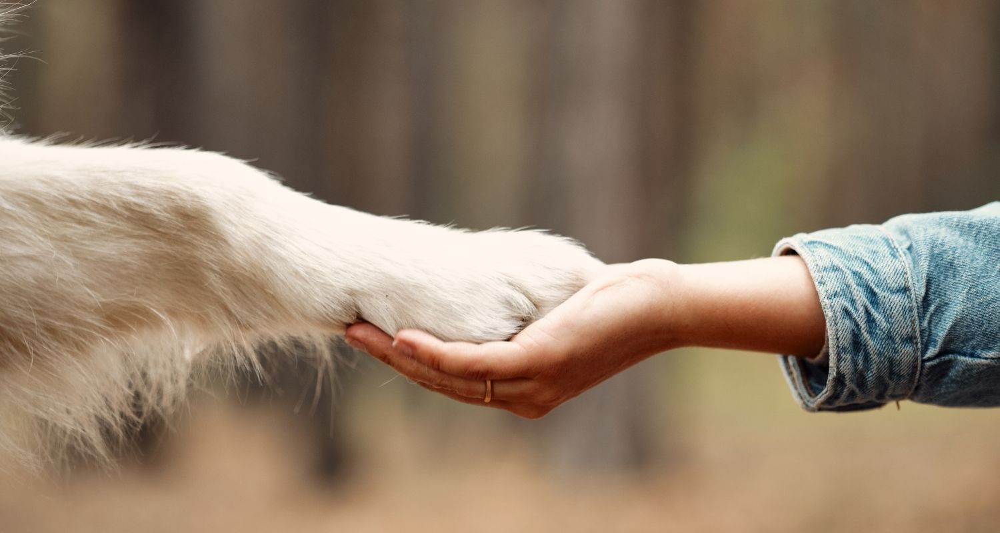
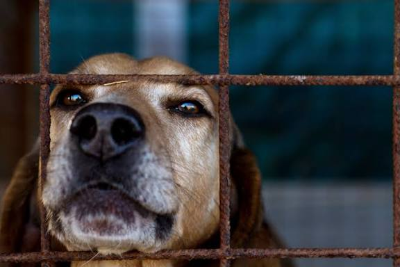
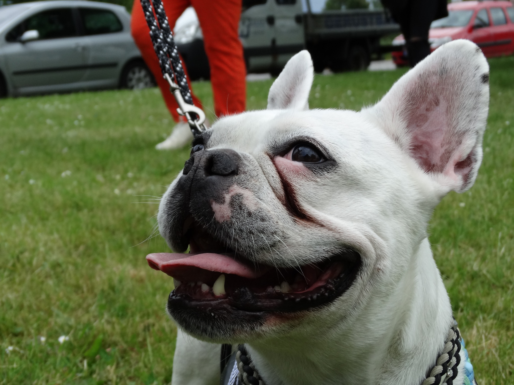
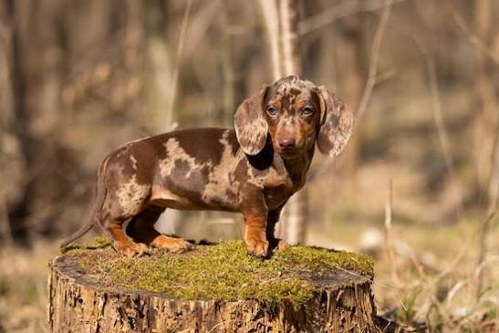

Tierschutz geht uns alle an!
Tiere sind keine Gegenstände. Sie brauchen Schutz, Verantwortung und ein artgerechtes Zuhause.
Was ist ein Tierschutzverein?
Ein Tierschutzverein setzt sich für das Wohl und den Schutz von Tieren ein.
Viele Tierschutzvereine betreiben Tierheime, in denen die Tiere vorerst aufgenommen,
versorgt und anschließend in ein neues Zuhause vermittelt werden.
Tierschutz bedeutet jedoch mehr als nur die Aufnahme und Vermittlung von Tieren.
Auch die Aufklärung über artgerechte Tierhaltung, die Beratung von Tierhaltern und der Schutz
von Tieren vor Vernachlässigung und Misshandlung gehören zu unseren Aufgaben.

Wofür setzen wir uns ein?
Für uns steht das Wohl der Tiere an erster Stelle. Besonders wichtig sind uns folgende Punkte:
- Artgerechte Haltung und Versorgung
- Vermittlung in ein geeignetes Zuhause
- Schutz vor Vernachläassigung und Misshandlung
- Aufklärung über die Bedürfnisse verschiedener Tierarten
- Prävention von Tierleid durch Kastrationsaktionen für Straßen- und freilebende Tiere
Wie kannst du Tierschutz unterstützen?
Es gibt verschiedene Möglichkeiten, den Tierschutz zu unterstützen. Dabei muss es nicht immer eine Geldspende sein. Auch mit Zeit, Sachspenden oder einem verantwortungsvollen Umgang mit Tieren kann jeder einen Beitrag leisten.
Ein Tier adoptieren
Wer einem Tier ein neues Zuhause geben möchte,
kann sich in einem Tierheim nach einem passenden
Begleiter umsehen.
Eine Adoption sollte jedoch gut überlegt sein,
da die Haltung eines Tieres langfristige
Verantwortung bedeutet.
Geld- und Sachspenden
Tierheime und Tierschutzvereine sind auf
Unterstützung angewiesen.
Neben Geldspenden können auch Sachspenden
wie Tierfutter, Decken, Handtücher und
Spielzeug hilfreich sein.
Ehrenamtlich helfen
Eine weitere Möglichkeit ist die ehrenamtliche
Unterstützung.
Je nach Einrichtung können Helfer beispielsweise
bei der Versorgung der Tiere oder bei anderen
anfallenden Aufgaben unterstützen.
Patenschaften übernehmen
Wer selbst kein Tier aufnehmen kann,
kann durch Patenschaften unterstützen.
Damit kann zur Versorgung eines bestimmten
Tieres beigetragen werden.
Verantwortung übernehmen
Tierschutz beginnt bereits vor der Anschaffung
eines Tieres.
Zukünftige Tierhalter sollten sich deshalb
über die Bedürfnisse, Haltung, Kosten und
Lebenserwartung eines Tieres informieren.

Was bedeutet Qualzucht?

Französische Bulldogge

Tiger-Dackel
Scottish Fold
Auf den ersten Blick süß - doch was steckt dahinter?
Große Augen, kurze Schnauze oder ein außergewöhnliches Aussehen können auf den ersten Blick
besonders niedlich oder schön wirken.
Doch einige dieser Merkmale beudeten für die betroffenen Tiere gesundheitliche Probleme und Einschränkungen.
Ein Tier ist kein Modeaccesoire!
Was für den Menschen vielleicht süß aussieht, kann für ein Tier im Alltag zur Belastung werden.
Deshalb lohnt es sich, genauer hinzusehen und sich nicht nur vom Aussehen eines Tieres leiten zu lassen.
Du möchtest mehr über Qualzucht und ihre Folgen erfahren?
Weitere Informationen findest du beim
Deutschen Tierschutzbund